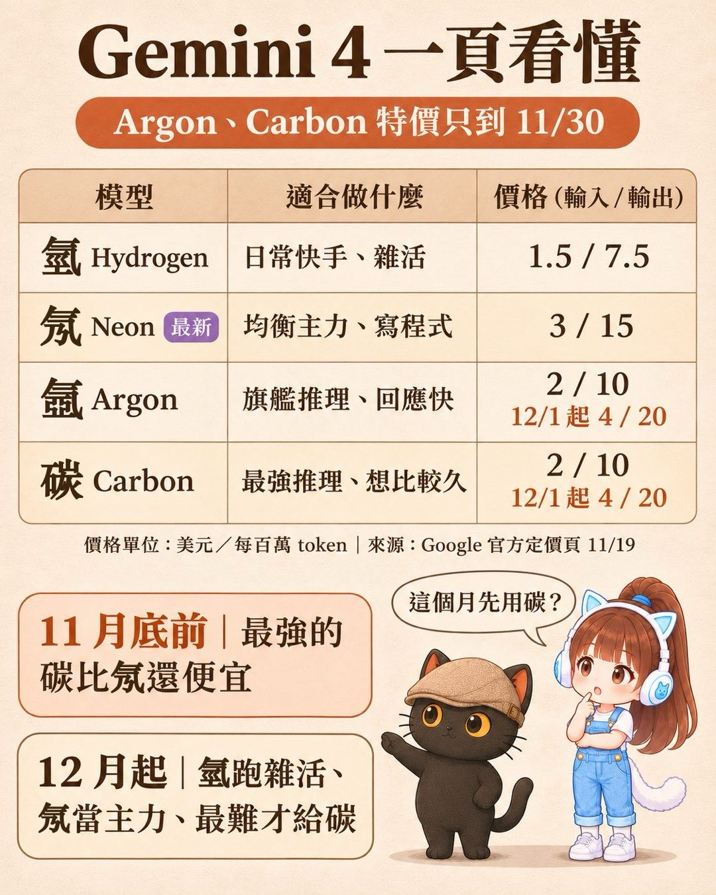

這篇在講什麼
新模型一出來，大家都在比跑分。我比較在意的是：它做我每天的知識工作，會不會比現在用的好，好到值得改派工。這篇先介紹兩家的新成員，再用同一份考卷實測三款，最後講我怎麼把工作分給不同家的 AI。
- 看到新模型出來，不確定要不要換的人
- 手上有好幾家 AI，想知道工作該怎麼分的人
- 要幫客戶或團隊挑模型、排分工的顧問與講師
- Claude、ChatGPT、Gemini 三家現在的模型陣容與上線時間
- Gemini 4 四款、GPT-6.2 兩款並排比較：定位、價格、跟上一代差在哪
- 三款新模型在會議統整、課程簡報、規則推理、逐字稿清理的實測分數與費用
- 新模型出來時，判斷要不要換的四個步驟
三家現在的模型陣容（一般用戶在 App 裡用得到的版本）
| 由重到輕 | Anthropic（Claude App） | OpenAI（ChatGPT） | Google（Gemini App） |
|---|---|---|---|
| 第 1 級最重、最強 | Fable 5.211/9 上線｜付費方案 | GPT-6.2 Astra11/17 上線｜Work 模式預覽，Plus、Pro 起 | Gemini 4 Carbon11/10 上線｜AI Ultra |
| 第 2 級 | Opus 5.59/22 上線｜付費方案 | GPT-6.2 Sol11/17 上線｜Work 模式預覽，Plus、Pro 起 | Gemini 4 Argon10/13 上線｜AI Pro、Ultra |
| 第 3 級 | Sonnet 5.59/28 上線｜免費可用 | GPT-6.1 Terra10/26 上線｜Work 模式，付費方案 | Gemini 4 Neon11/18 上線｜AI Pro、Ultra |
| 第 4 級最輕、最快 | Haiku 5.510/7 上線｜免費可用 | GPT-6 Luna9/22 上線｜免費版 10/8 起分批開放 | Gemini 4 Hydrogen11/12 上線｜免費版由自動模式分流，付費可手選 |
日期都是 2026 年，以官方 App 開始開放的日子為準；方案以官方說明為準，會隨時調整。每家照自己公告的定位由重到輕排，同一列不代表能力一樣。ChatGPT 的 GPT-6.2 目前在 Work 模式預覽，一般對話用的還是 GPT-6 Sol（Thinking）和 GPT-6 Astra（Pro）。
兩家新模型一次比
| 模型 | 上線 | 定位（官方說法） | API 價格 輸入／輸出 | 跟上一代比（官方說法） | 綜合智力指數＊ | 我有沒有測 |
|---|---|---|---|---|---|---|
| Gemini 4 HydrogenGoogle · 氫 | 11/12 | 日常快手，快又便宜 | 1.5／7.5 | 捏造的說法比 Gemini 3.8 Flash 少五倍以上 | 51 | 11/16 測過 |
| Gemini 4 NeonGoogle · 氖 | 11/18 | 均衡主力，複雜軟體工程、知識工作 | 3／15 | Google 說是 Antigravity 內測裡捏造率最低的模型 | 61 | 這次測 |
| Gemini 4 ArgonGoogle · 氬 | 10/13 | 旗艦推理，回應比 Carbon 快 | 2／10 12/1 起 4／20 | Gemini 4 最早上線的一款 | 50 | 11/16 測過 |
| Gemini 4 CarbonGoogle · 碳 | 11/10 | Google 最強的推理模型，想比較久 | 2／10 12/1 起 4／20 | 無依據的說法比 Argon 約少一半 | 59 | 沒測 |
| GPT-6.2 SolOpenAI | 11/17 | 兼顧速度與推理的日常主力 | 2／10 | 價格跟 GPT-6.1 Sol 一樣；用更少輸出 token 做完多步驟工作 | 57.3 | 這次測 |
| GPT-6.2 AstraOpenAI | 11/17 | 旗艦推理，複雜研究與專業交付 | 8／40 | 比 GPT-6 Astra 降價 20%；內部評測 GDPval v2 提高 6.2 個百分點 | 62.1 | 這次測 |
價格單位是美元／每百萬 token。＊綜合智力指數是第三方 Artificial Analysis Intelligence Index，數字取自兩家的公告與模型卡：Hydrogen 是預設 high，Neon 是 xhigh；Argon、Carbon 用 v5.0，其餘用 v5.0.1。版本和推理強度不一樣，只能粗看高低。
Google Gemini 4：四款改用化學元素命名

四款共用約 100 萬 token 的上下文，由輕到重是 Hydrogen、Neon、Argon、Carbon。
Google 公布的特色：Hydrogen 捏造的說法比 Gemini 3.8 Flash 少五倍以上；Neon 是 Google 說的 Antigravity 內測裡捏造率最低的模型；Carbon 無依據的說法比 Argon 約少一半。這些是 Google 自己的說法，不是我測的。
價格是 Gemini API 按用量計價的價格。用 Gemini App 或 Google AI Pro 訂閱的人是固定月費，不受影響。
| 模型 | 上線 | Google 的定位 | API 價格（輸入／輸出，美元／每百萬 token） |
|---|---|---|---|
| Hydrogen 氫 | 11/12 | 快速、低成本，日常寫程式、多模態分析與代理工作流 | 1.5／7.5 |
| Neon 氖 | 11/18 | 快速完成複雜軟體工程、知識工作與科學流程 | 3／15 |
| Argon 氬 | 10/13 | 較有效率的前沿推理模型，回應比 Carbon 快、每回合用的 token 較少 | 2／10，12/1 起 4／20 |
| Carbon 碳 | 11/10 | Google 目前最強的推理模型，主打長程代理工作與複雜除錯 | 2／10，12/1 起 4／20 |
OpenAI GPT-6.2：Sol 和 Astra
| 模型 | 上線 | OpenAI 的定位 | API 價格（輸入／輸出，美元／每百萬 token） |
|---|---|---|---|
| GPT-6.2 Sol | 11/17 | 兼顧速度與推理的日常主力 | 2／10（跟 GPT-6.1 Sol 一樣） |
| GPT-6.2 Astra | 11/17 | 旗艦推理，主打複雜研究、軟體開發、端到端專業交付 | 8／40（比 GPT-6 Astra 降 20%） |
OpenAI 公布的特色：Sol 用更少的輸出 token 完成較難的多步驟工作，寫作也更自然；Astra 改善了簡報、試算表、文件的範本遵循，內部評測 GDPval v2 提高 6.2 個百分點，輸出 token 少 22%。
實際用的時候踩到的兩件事
- 我電腦上舊版的 Codex 命令列叫 GPT-6.2 會回「不支援」，官方寫要 0.166.0 以上；我改用 ChatGPT App 內附的新版就叫得到。
- 我平常用的反重力命令列（Google 的 Antigravity）目前只有 Hydrogen、Neon、Argon，沒有 Carbon，所以這次 Carbon 沒有測。
怎麼測：會議紀錄、逐字稿同一份考卷，加上舊答卷當尺
考卷跟 11/16 那篇七款模型實測 完全一樣：會議統整、課程簡報、規則推理三題，加上一份逐字稿清理。閱卷也一樣，Anthropic、OpenAI、Google 三家各派一個模型評分，每份答卷只採計另外兩家的分數。
這次多做了一件事：閱卷時把 11/16 的三份舊答卷（Opus 5.5、GPT-6.1 Sol、Gemini 4 Hydrogen）混進去一起評。同一份答卷，這次重評的分數跟上次比：
- 三題工作考卷：差 −2.5 到 +1.3 分。
- 逐字稿清理：差 −3 到 +6 分。
- 整理會議記錄、分析文件，該用哪個 AI 模型？：這次用的考卷、閱卷方式和七款舊模型的完整成績都在那篇。
新舊模型成績對照
| 模型 | 三題平均 | 逐字稿清理 | 強項 | 要注意 | 每次清理費用 |
|---|---|---|---|---|---|
| Gemini 4 NeonGoogle | 90.3 | 82.6 | 規則推理 94.5 | 清理花 160 秒；地名硬改沒標待確認 | 約 1.5 至 4.4 元＊ |
| GPT-6.2 AstraOpenAI | 89.9 | 71.4 | 課程簡報 97.5 | 清理把買賣方向講反 | 約 9.0 元 |
| GPT-6.2 SolOpenAI | 85.4 | 77.9 | 會議統整 95.3 | 規則推理 65.3，漏寫關鍵理由 | 約 2.7 元 |
滿分 100，紅字是該欄第一。Neon 兩欄都最高，但跟第二名的差距都在誤差內，算同級（誤差怎麼量，見上面「怎麼測」）。
完整對照（含 11/16 舊成績）
| 模型 | 會議統整 | 課程簡報 | 規則推理 | 三題平均 | 逐字稿清理 | 每次清理費用 | 清理耗時 |
|---|---|---|---|---|---|---|---|
| Gemini 4 NeonGoogle · 新 | 84.8 | 91.5 | 94.5 | 90.3 | 82.6 | 約 1.5 至 4.4 元＊ | 160 秒 |
| GPT-6.2 AstraOpenAI · 新 | 93.8 | 97.5 | 78.5 | 89.9 | 71.4 | 約 9.0 元 | 63 秒 |
| GPT-6.2 SolOpenAI · 新 | 95.3 | 95.7 | 65.3 | 85.4 | 77.9 | 約 2.7 元 | 66 秒 |
| Opus 5.5Anthropic · 11/16 | 72.2 | 96.0 | 98.0 | 88.7 | 80.0 | 約 4.6 至 6.2 元 | 未記 |
| GPT-6.1 SolOpenAI · 11/16 | 91.6 | 95.0 | 74.3 | 87.0 | 73.0 | 約 2.6 至 4.0 元 | 未記 |
| GPT-6 AstraOpenAI · 11/16 | 88.9 | 95.0 | 81.2 | 88.4 | 72.3 | 約 13.9 至 14.4 元 | 未記 |
| Gemini 4 HydrogenGoogle · 11/16 | 71.4 | 93.0 | 91.3 | 85.2 | 72.3 | 約 0.6 至 2.7 元＊ | 未記 |
| Gemini 4 ArgonGoogle · 11/16 | 74.3 | 72.6 | 81.1 | 76.0 | 71.0 | 約 1.4 至 4.5 元＊ | 未記 |
滿分 100，紅字是該欄第一。新模型各跑一輪；舊成績取 11/16 那篇，逐字稿清理是兩輪平均。費用是 API 等值價，以 1 美元＝32 元台幣估算，實際是用訂閱額度跑。GPT 兩款取 Codex 紀錄的 token 數乘官方單價。＊Gemini 的反重力不回傳 token 數，改用字數估再乘官方單價，所以給範圍。
實測看到的四件事
Neon 這輪是 Gemini 考得最好的
規則推理 94.5，比 Hydrogen 的 91.3、Argon 的 81.1 都高；會議統整 84.8，比 Hydrogen、Argon 高十分以上。逐字稿清理 82.6 是這批最高，但跟 Opus 的 80.0 只差 2.6 分，在誤差範圍內。
它還是會犯清理逐字稿最怕的錯：原稿一個聽不清楚的地名「如州」，它直接改成「蘆洲」；原稿說「好像是中正區」，它寫成肯定句。兩處都沒標待確認。另外清理花了 160 秒，是其他款的兩倍多。
GPT-6.2 Sol 會議統整最高，規則推理漏寫理由
會議統整 95.3，閱卷三家都沒抓到它加料，十六個要點幾乎全中。
規則推理這輪只有 65.3，比 GPT-6.1 Sol 在 11/16 的 74.3 還低。它的判斷方向都對，扣分扣在沒寫出關鍵理由：例如沒說「上週同意過的不算數」、沒說「急件也不能跳過規則」。
GPT-6.2 Astra 變便宜，逐字稿清理還是犯錯
課程簡報 97.5 是這批最高，清理一次約 9 元，比舊的 GPT-6 Astra 約 14 元便宜。逐字稿清理 71.4，跟上一代兩輪的 70.4、74.1 差不多，還有一處把「我可以賣系統給你」寫成「我可以跟你買系統」，買賣方向講反了。
讀起來很順的錯，三款都還在
新的三款都把「如州」改成「蘆洲」沒標待確認。這種錯讀起來很通順，沒對原稿看不出來。所以清理逐字稿不管換誰，我都還是要留一道照規則自查。
- AI 小工具該用便宜模型還是貴的？：同一份考卷考三輪的另一個例子，那篇看的是小工具。
我的 AI 派工原則
為什麼要派工
- 主模型做決斷，執行交給別人我的 AI 總管是 Claude，負責拆工作、看結果做決定；執行交給別家的模型，再找另一家互審。我跟它講過：「你可以多教阿港幫你處理，有問題也可以叫 CX 互審，你當決斷就好。」（阿港是 Gemini 4 Argon，CX 是 Codex）
- 審稿一定跨家審稿要找跟寫稿不同公司的模型，不讓模型審自己家的作品。
- 雜活交給便宜的模型雜活和簡單的決策檢查，預設都交給 Gemini 4 Hydrogen。11/16 那篇我寫過：Opus 加 Hydrogen 這樣搭配，省蠻多的，成果也還算穩定。
我現在實際怎麼搭配（這次重測前）
| 工作 | 誰做 | 誰審或拍板 |
|---|---|---|
| 雜活、整理、查資料第一輪 | Gemini 4 Hydrogen（小氫） | Claude 做最後統整 |
| 複雜決策、雙軌互審 | Gemini 4 Argon（阿港） | |
| 清理逐字稿 | Opus 5.5 一條龍 | 照清理規則自查 |
| 整理會議記錄、脈絡分析 | Opus 5.5 | GPT-6.1 Sol 互審 |
| 生圖 | Codex（GPT） | Claude 看圖驗收 |
| 執行細節有取捨 | 三家投票：主寫的那家加另一家先審，兩家都過就做；有意見再找第三家，三票兩票過 | |
| 最後拍板 | 我 | |
- 頂規 AI 模型很貴，哪些事交給它、哪些交給便宜的？：貴模型動腦、便宜模型搬磚的分工思路。
- AI 任務多到管不過來，下一步怎麼辦？：為什麼要有一位 AI 總管來管其他 AI。
你可以怎麼做：新模型出來時
沒有的話，從自己每週最常做、最怕做錯的工作挑三到四種出一份。
同一份答卷重評分數會跳多少，就是你這份考卷大概的誤差。
只贏兩三分的，先不急著換。
派工表一格一格看，不要因為某款總分高就整張表換掉。
這次測試的限制
- 新模型都只跑一輪，舊成績來自 11/16。
- 同一份答卷在不同閱卷家之間可以差很多：GPT-6.2 Sol 的規則推理，OpenAI 閱卷給 89.0，但它是同家所以不採計；另外兩家給 62.1 和 68.5。
- 考卷沒有測長篇文件、工具操作和連線穩定度。測試當天 Hydrogen 就碰過一次伺服器沒容量的錯誤。
- Carbon 這次沒測，因為我用的反重力命令列還沒有它。
- 考卷由 AI 出題，可能偏向某家擅長的方向。